Action for Heroes
Guide for Heart - to - Heart Chats with Children to accompany reading of My Hero Is You
Introduction
Please read this Action for Heroes Guide BEFORE you begin to read the storybook with the children and continue to use its advice after you finish.
The storybook, “My Hero is You, How kids can fight COVID-19!” , explains how children can protect themselves, their families and friends from the coronavirus and how to manage difficult emotions when confronted with our new and rapidly changing reality. You can read and download this book for free on the IASC website. It has been translated into 125+ languages and multi¬media adaptations have been made. Links to these resources are available at the end of this guide.
It is recommended that adults read the storybook WITH the children. As they read the storybook, this Guide directs adults about how to have Heart-to-Heart CHATS with children and educate them about the coronavirus and COVID-19. It explains how adults can create safe spaces for children to openly share their feelings, including their fears and worries about the coronavirus and frustrations at their changed daily lives. The Guide also directs adults about how to promote positive actions that children can take to protect themselves and others.
It is best when children are informed with accurate information about the coronavirus and its risks and how to prevent the COVID-19 infectious disease by adults who are known to them and trusted like parents, caregivers and teachers. The language used to explain the facts can be simple and direct and modified to the age of the children. Children who are not well informed are at risk of not taking precautions seriously and putting themselves and others at risk of infection. Also, poorly informed children can become unnecessarily anxious because they feel adults are hiding the truth from them. Even from a young age, children are aware of changes around them, so it is important to speak with even young children about what is going on.
Since the storybook encourages children to be heroes and take an active role in prevention, it is important for adults to balance an explanation of the problems and risks of the coronavirus with clear descriptions about how adults will protect the children and what the children can do to prevent infection and protect themselves and others.
The storybook contains many important messages for adults to CHAT about with the children. As adults and children read the storybook, they will see 9 CHAT bubbles located throughout the book which look like this:
3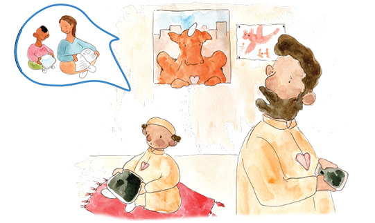
CHAT messages
The CHAT messages are:
|
CHAT 1: |
Staying healthy |
p.10 |
|
CHAT 2: |
Children speak out |
p.13 |
|
CHAT 3: |
Coping with stress |
p.15 |
|
CHAT 4: |
Keeping each other safe |
p.19 |
|
CHAT 5: |
Solving problems |
p.22 |
|
CHAT 6: |
All people need to be protected |
p.25 |
|
CHAT 7: |
Living with heartache |
p.27 |
|
CHAT 8: |
Being a citizen of the world |
p.30 |
|
CHAT 9: |
My Hero is YOU |
p.33 |
Preparing to read and CHAT
When preparing to read with children, please remember:
-
The story can be read with one or more children.
4 -
An adult or an older child can read page by page.
-
It is best to read slowly and tell the story with a bit of drama.
-
The adults and children want to see the pictures, so sit close, but not too close together, to allow for proper physical distancing, and arrange the seating so the children can easily see the pictures.
-
Try to sit in a quiet space where you can avoid interruptions.
-
When reading with a group of children, adults are responsible to ensure that all of the children have the chance to safely share their thoughts and feelings during the CHATs.
-
The CHATs are good opportunities for adults to teach children effective ways to manage their fears and stressful situations.
It is time to CHAT, when you see
Everyone who will read the storybook and chat with the children are referred to as “ADULTS” in this guide. They include:
-
Parents
-
Grandparents
-
Caregivers
-
Teachers
-
Youth leaders
Adults know the special dynamics of their cultures, environments and social norms. It is recommended that the CHATs are honest discussions that include positive actions children can take that are realistic and fit into their unique real-life experiences. CHATs and actions differ for children living in cities or rural areas, from different continents, living in their homes or in a camp in another country, and vary depending on economic, social, religious and cultural values.
The CHATS vary depending on the relationship of the adults to the children. In addition to informing children about COVID-19, parents reading the storybook with their children, direct their CHATs to include actions showing how they as parents will protect the children and how the children can participate in protecting the family. When teachers or youth leaders read with the children, they can direct their CHATs and actions towards showing how they will participate in protecting the children and how the children can be responsible and protect their friends and classmates.
In each CHAT, adults have conversations with children about different messages.
The CHATS can go in two directions...
5
Sharing information:
First, adults need to be well informed so that during a CHAT they share accurate information with children. Remember, children have some awareness about the coronavirus since they are keen listeners and at every age hear adults talking and feel their emotional cues. Adults can answer children’s questions honestly to ensure that they have a clear understanding of the coronavirus and its risks. The answers can be scary, so adults can use the CHATs to reassure children and explain the actions they as adults and the children can take to keep safe. For children feeling safe not only comes from knowing adults are there to care for them, feeling safe also comes from learning ways they can feel empowered or strong enough to be heroes and take actions to protect themselves and those they love.
The second direction for CHATs encourages adults to take the time to listen and hear what children feel and think about today’s changed life.
Hearing children:
To encourage children to chat freely adults will:
-
Sincerely take the time to show their interest in what the children think and feel.
-
Listen and be patient as children talk and hear what children say and feel.
-
Talk with the children. Do not talk at them or to them. Talk with them.
-
Ask questions to show interest and understand the children’s thoughts and feelings.
-
Reflect on what the children say to have two-way discussions.
6 -
Educate children and honestly reassure them about the present situation.
-
Offer realistic protection to children.
-
Offer support and love to the children.
-
In a group reading, give equal opportunity for children to speak when they want.
-
Encourage children to listen and respond to each other in respectful ways.
Example of a CHAT that HEARs the child:
A Dad and his 10 years old son, Salem are reading the storybook together.
At CHAT 2 Dad wants to talk with Salem about his feelings regarding the coronavirus.
Dad: In the story, Sara shares that she is scared of the virus. What about you? What about the coronavirus scares you?
Salem: I am afraid to die. Some nights it’s hard to fall asleep. I worry I won’t wake up.
7Dad: I am sorry you worry at night. I didn’t know you felt like this. What makes you worry that you won’t wake up?
Salem: I heard some children died from Corona. I don’t know why they died but I heard someone say this. If I get the virus will I die?
Honest response to fact.
Dad: A very small number of children around the world got very sick from the virus and died. It is very rare. You are healthy and most of these children had other health problems in addition to the virus.
Salem: So, I won’t die if I get the virus?
Dad: It is very unlikely that you will die if you get the virus. Most often children do not get seriously ill and die.
Salem: That’s good to know.
Talk about feelings and protection.
Dad: I hope we can talk when you feel worried. When you worry at night, let’s agree on what we can do to help you feel safe and sleep. What can we do?
Salem’s Dad listened and encouraged Salem to share his feelings. He responded with kindness, support and accurate information. He offered to help Salem to find ways to feel safe at night. Salem responded positively and was encouraged to continue to CHAT.
Example of a CHAT where a child is not heard:
Let’s imagine if Salem’s Dad said the following:
Dad: In the story, Sara shares that she is scared of the virus.
What about you? What about the coronavirus scares you?
Salem: I am afraid to die. Some nights it’s hard to fall asleep. I worry I won’t wake up.
Unfortunately, Salem’s Dad wants to quickly reassure Salem that he won’t die in his sleep.
Dad: Don’t worry, you will wake up.
Salem: Ok.
Salem ends the CHAT.
8The CHAT was quickly over. Clearly, this is not what we want. Salem ended the CHAT because, his feelings were turned off. Salem’s Dad did not hear his fear. His Dad wanted him to know he was safe and might have felt unsure how to discuss a difficult topic, so he gave Salem a quick answer. If Salem’s Dad wants to understand how Salem feels and encourage Salem to feel it is okay to share his feelings, his Dad needs to listen and respond to his feelings as he did in the first example.
Focus on the key messages
Whether we are chatting with one child or a group of children, in each CHAT adults will focus on essential messages and keep the CHATs brief to avoid losing the intensity of reading the story. Asking an open question like, “What makes you sad?” can be particularly challenging. Children could answer by talking about the coronavirus or about a bully at school. Adults keep each CHAT focused only on the message of that CHAT. Adults ask questions specific to that CHAT like, “What makes you sad about the coronavirus?” Children share. Adults listen and respond and share the message and lessons of each CHAT. Adults can offer to CHAT about other issues after reading the story book.
Length of CHAT
We want to give opportunities for all children to share their ideas and feelings. However, some children like to talk, some rarely want to talk and some talk too much. Adults will need to control the length of each CHAT. If a child is talking a lot, adults listen and remind them we want to go back to the story and arrange to talk more after they finish reading the story. Some children do not feel comfortable to speak. Best not to push them. This is story time and children can listen and learn and not everyone needs to talk.
Unique CHATS
CHATs vary by cultures and the personalities and the relationship of the adults and children. A CHAT with a teacher will be different than a CHAT with a parent.
However, the purpose of the CHATS are always the same. The CHAT is a safe place for children to share their thoughts and feelings, to learn facts about the coronavirus, and understand how children can take responsible action to protect themselves and others.
Understanding the Guide
The adults will read the storybook with the children and at each they will lead a CHAT about the lessons in that section of the storybook. These tools are available to assist the adult to lead each CHAT. There are 4 tools:
THE ARIO News
This newspaper offers guidance to all adults about how to CHAT with the children.
Key CHAT messages
These are the overall themes or messages for each CHAT.
As example: CHAT 1: Staying healthy.
10As you read the storybook, the messages in this Guide follow the themes in the story.
Let’s CHAT
This is information for adults about what to share with children during this CHAT.
ASK the children
These are specific questions adults ask the children to lead into this CHAT.
Throughout the storybook, children are encouraged to be heroes and citizens of the world whose actions form a global chain through which all people protect each other. During CHATs, adults promote this message of responsibility and action. Children are engaged about how to make choices and keep themselves and those they love safe and thereby giving them feelings of hopefulness and possibility.
READY: IT’S TIME TO START TO READ AND CHAT
As you open the storybook, this is said by adults FIRST.
Adults CHAT with Children:
I know you have heard lots of talk all around you about the coronavirus. The coronavirus has changed our lives, so it is important for us to CHAT about it. This storybook was written to help us CHAT and share our feelings about the coronavirus and how our world has changed. It will give us ideas about how we can stay healthy and be responsible to protect ourselves and others from the coronavirus. Ready to listen and CHAT?
> Read this page of My Hero is You
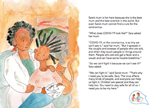
11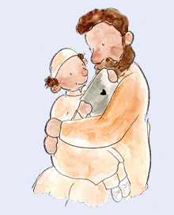
THE ARIO
INFORMATION FOR ADULTS
ADULTS BENEFIT FROM LISTENING TO CHILDREN
BENEFITS FROM LISTENING
Adults ask open questions to invite children to talk about what they know. As the children speak, and they recognize the adult is listening, they can feel comfortable to continue to share their ideas, thoughts and feelings.
Adults can listen patiently to all children know about the virus. Some of their information will be factual some will not. After the children respond, the adults praise the children for sharing what they know. They repeat what the children said that is correct. Without saying, “NO, that’s wrong”, they hear what is inaccurate and explain the facts.
Importantly, when adults talk to groups be sure the children are listening to each other. CHATS need to be safe spaces to talk freely so it is important that adults prevent children from teasing or bullying each other The adult is responsbile for the chat and needs to be sure all children can chat safely.
13
CHILD SAYS NO: “I DON’T NEED TO TALK ABOUT COVID-19!”
14
Let’s imagine a child says NO. “I don’t need to talk about COVID-19, I know everything about it. I’m a kid. I’m not going to die from this virus. I want to go and play.”
Some children present themselves as knowing about everything. It is best not to offend them and remind them that at their young age it is unlikely they know everything. We want to encourage the self-esteem of all children.
However, we also want them to accept their limitations, so they know it is okay when they do not know, okay to sometimes have feelings like being unsure or anxious, and okay to ask for help. We can tell them that even the most famous scientists are still learning about the coronavirus.
THE ARIO
INFORMATION FOR ADULTS
CHILDREN NEED TO KNOW THE FACTS ABOUT COVID-19
SHARE THE FACTS
Start your chats with children by sharing clear factual information about the coronavirus and Covid-19. Children can only learn how to protect themselves if they fully understand the virus and its risks.
Adults ask open questions to invite children to talk about what they know. As the children speak, and they recognize adults are listening, they can feel comfortable to continue to share their ideas, thoughts and feelings.
HOW FAR IS FAR ENOUGH?
Different country health systems recommend 1-2 meters for “social” or “physical” distancing. Please check what is recommended in your country and use this with the children.
To be sure children understand how big is the distance you can pace the distance or use a ruler, a piece of string or have the children lie on the floor to measure 1 or 2 meters.

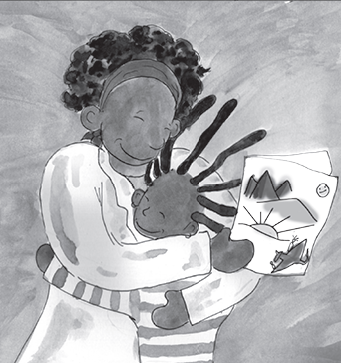
WORLD FAMOUS SCIENTISTS STILL LEARNING ABOUT CORONAVIRUS
We are all still learning about this new coronavirus. Scientists do not have all the answers. Adults do not have all the answers. Yet, children are asking questions and adults must do their best to answer as well as let children know we are all still learning.
If children challenge the risks to them as children, adults can respond with, “You are right. Children do not often get seriously sick from the virus. BUT, some do and there are still risks. Many people, including children, can have the virus inside them and pass it to others. Your little sister has a heart problem and if she gets the virus it can be serious because she has other health problems. And, Grandma and Grandpa need to avoid getting the virus because older people can become very sick and even die from the virus.”
Children need to be part of helping to protect people and prevent them from getting the virus. If Sara asked, “I don’t want to get anyone sick. How do I know if I have the virus inside me?” Sara’s Mum can answer, “Most often you don’t know because you feel fine. Let’s keep reading the story since it will teach us how to protect ourselves
KEY MESSAGE 1 Staying healthy
CHAT 1
Let’s CHAT
Before we get into the story more, let’s chat about the coronavirus and how you can protect yourselves and others from the virus. Tell me what you already know about the virus.

ASK the children
Tell me what you already know about the virus.
Children respond with the information about the coronavirus that they know. Children might say...
-
“The coronavirus crawls onto you from tables and chairs and even pieces of paper.”
-
“The coronavirus is fake.”
-
“The coronavirus kills people.”
Let’s CHAT
Thanks for sharing what you know. Seems you have been listening well to all that is being said around you.
The coronavirus is causing a disease called COVID-19. It is a new virus and the disease is contagious - that means it passes from one person to another. The disease became a global pandemic since it spread to countries around the world.
18The coronavirus moves from one person to another through droplets that come from the mouth or nose of an infected person who talks, laughs, cries, coughs or sneezes. These droplets fly into the air and can land in the mouths or noses of people close-by. The droplets can also land on a table, chair or other surface and we if we touch it and touch our eyes, nose or mouth we can get infected.
You need to tell me right away if you or anyone you know has any of the virus symptoms like headache, cough, sneezing, body aches, fever and loss of sense of smell and/or taste. We need to be extra careful since even having one symptom can mean you are infected and can pass the virus to others. The good news is that most people only get mildly sick. However, even if they feel better in a few days they might still be contagious and need to stay home and keep away from everyone until their doctors say they are no longer contagious.
It’s a sneaky virus because many people have the virus but feel fine. They can still give it to someone else even if they don’t mean to do it. I know it all sounds scary. That’s why we are talking and reading this book. I am doing everything I can to keep us healthy. I want to be sure you know how to protect yourself and not get the virus!
I know you want to go out to play with your friends. But, we must go out safely. To avoid the droplets from someone who is infected, it is best to wear a mask. We also need to physically distance to avoid the droplets so we must stay at least 1 meter away from another person.
The best protection is washing with soap and water so we will clean our hands more than ever. If we avoid touching our eyes, nose and mouth, even if we touch the virus we can avoid bringing it into our body.
All over the world, people, like us, are reading this storybook and learning how to prevent the spread of the virus.
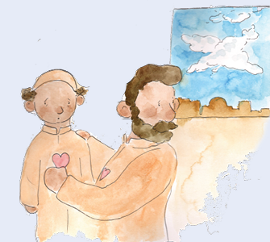
ASK the children
Do you have any questions about the virus before we continue to read?
Children ask questions and the adults answer their questions.
Let’s CHAT
The virus has turned our world upside down. Let’s continue to read about Sara and see what we can do to stay safe...
Read these pages of My Hero is You
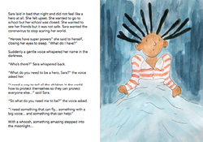

THE ARIO
INFORMATION FOR ADULTS
CHILDREN SPEAK OUT
CHILD SAYS, “I LOVE BEING AT HOME.”
Children have mixed feelings about how the virus has affected their lives. Some say they hate the virus and it’s led them to be bored, lonely, angry and more.
Some children say they like being at home and spending time with their families. Other children say, it’s a relief to not attend school. Every child has a unique set of feelings.

AVOID JUDGEMENT EXPERTS SAY, “LISTEN”
Adults need to listen well and respond without judgement to what the children share. If we criticize the children and disagree and tell them how they should feel they might stop sharing. If a child says, “I want the virus to stay forever and stay out of school” and the parent says, “School is important. With an attitude like that you’ll never get good grades.” The child will stop chatting. Children chat freely when adults listen and are not judgmental about what they say.
20Children might also mention other reasons they don’t want to attend school or other unrelated problems. If the children’s chats are different than the messages of the book, adults can arrange to CHAT more after they read
CHILDREN SPEAK OUT WITH IMPORTANT MESSAGES
We live in a challenging time. We can educate the children about how to be safe and encourage them to use their voices to be heroes who speak out to inform and protect others.
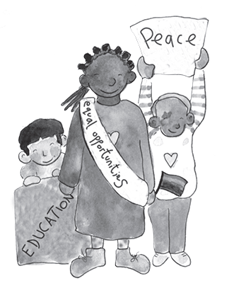
KEY MESSAGE 2 Children speak out
CHAT 2
Let’s CHAT
We live in a challenging time. We will educate the children about how to be safe and encourage them to use their voices to be heroes who speak out to inform and protect others.

In the story, Sara feels miserable. She feels the coronavirus has turned her world upside down.
ASK the children
How do you feel about the coronavirus and what has it done to your life?
When you ask this, children will respond in different ways. They might say...
-
“I’m happy. I like not having to go to school.”
-
“I miss my friends.”
-
“I hate the virus.”
-
“All day, every day, I am bored.”
ASK the children
Right now, we don’t know how to fight the coronoavirus and make it go away. Sara has a different idea about how to help. What does Sara want to do?
When you ask this, children might say: “Sara wants to find a way to tell all the children in the world how to protect themselves so they can protect everyone else.”
22ASK the children
Yes, Sara has courage. It’s not easy for children to speak out and have their voices heard. Can you share a time when you used your voice to speak out for what you believe?
Children can give examples. If the children can’t think of examples, the adults can share examples that show a child speaking out.
Let’s CHAT
Sara went to sleep wanting to be a hero. In her dream, her imagination created Ario to help her figure out how to protect others against the virus. Let’s keep reading to hear how Sara speaks out and makes her voice heard about how to protect others.
> Read these pages of My Hero is You

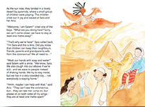
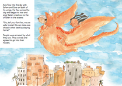
23THE ARIO
INFORMATION FOR ADULTS
MANAGING OUR STRESS
ADULTS AND CHILDREN FEEL STRESSED
Today’s times are stressful for everyone in every country in every city on every street across the world.
It is unrealistic to imagine that adults or children can be fully rid of all our stress. It is more realistic to learn to manage or cope with our stress. It is honest to acknowledge that we all feel stressed - adults and children - and CHAT with the children about realistic ways they can cope that fit their ages, cultures and environments. Of course, you as adults, also feel stress. Your children will see and feel your stress and often copy you.
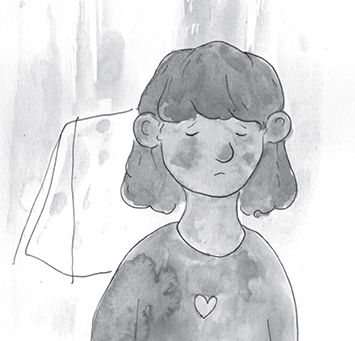
BE HONEST AND SHARE YOUR STRESS
Finding ways to cope with your own stress is important for your peace of mind and is an example your children can copy for how they can cope with their stress.
UNDERSTANDING CHILDREN’S STRESS
24Adults need to assist children to find ways they can cope with their feelings of stress. Important to be patient and try to understand their reasons for feeling this stress. It is good to praise the children for their efforts to cope and remain patient since the stress is ongoing and won’t just disappear.
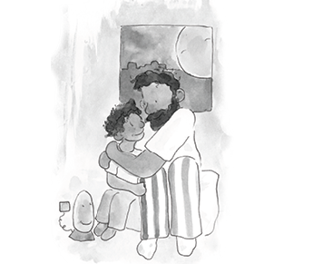
BREATHING EXERCISE HELP
Adults can teach children how to use breathing exercises to help them relax. Good for adults to try the exercises themselves first so they feel the benefit and then teach the children. When adults teach the breathing exercises they should speak slowly and in a calm, low voice. If children breathe too fast, it will not be helpful. If children breath too slowly, they will be uncomfortable. Adults can encourage children to continue to use the breathing exercises to help them relax whenever they feel scared.
Some children might say, “The breathing did nothing.” Adults can encourage these children to try it at times when they really feel scared and then check if it helps. Adults can also encourage children to think of others ways to relax.
KEY MESSAGE 3 Coping with stress
CHAT 3
Let’s CHAT
Ario is flying Sara and Salem across the world. It is hard to believe that everyone is having the same symptoms of the same COVID-19 disease and need to take the same protections. Sara and Salem are real heroes to go with Ario across the world and share lessons about the ways we can protect ourselves to avoid getting sick.

ASK the children
What is the advice Sara and Salem are sharing?
Children will say: “They are warning everyone to avoid getting infected they need to stay home and when they are outside not to shake hands, stay apart of another person, wash with soap and water, and cough into their sleeves not into the air.”
Let’s CHAT
Sara says again that she feels “scared”. Even in her dream, she is still scared and feels stressed about the changes the coronavirus has made to her life. Ario, is a giant dragon, and even he is scared of the coronavirus.
26ASK the children
The big truth is that the coronavirus is scary. What does your body do when you feel scared?
Children might say:
-
“I sweat.”
-
“I get a headache.”
-
“My legs want to run.”
-
“I feel jumpy.”
-
“I want to vomit.’
L et’s CHAT
Our bodies and our brains and our hearts talk together when we are scared. In our brains, we keep thinking over and over about what scares us. In our hearts, we feel scared. In our bodies, (repeat what the children said).
We are all scared about the coronavirus. It is hard to be a hero and protect yourself and others when you feel scared.
Even though the scary thing is still here, we can still take action to help us relax. Relaxing eases the feelings of stress in our bodies. When we ease the stress in our bodies, it slows down the thinking and worry in our brains and calms our hearts and our fears.
Relaxing can help us to live with our stress. If we feel more relaxed, it is easier to think clearly and find actions we can take.
ASK the children
What do you do to help yourselves relax when you feel scared about the coronavirus?
Children might say
-
“I ignore it.”
-
“I get angry.”
-
“I go and play.”
-
“I cry.”
ASK the children
When you do these things do you feel better?
Children might say
-
“YES, For a little while.”
-
“NO, it doesn’t matter.”
-
“I don’t know.’
27
Let’s CHAT
All your ideas are good. And, if they help you relax, great. I have some more ideas about what to do when we get scared.
First, it is good to share and tell me or another adult when you feel scared. We can always CHAT, not only today when we read the storybook. I hope when you feel scared you tell me and together, we can find ways to help you to relax. Chatting can help us to relax. “A problem shared is a problem halved.” There are lots of ways to relax. To relax, we can play sports, run, dance, sing or pray.
Ario says when he wants to relax he breathes slowly and out comes fire. The fire sounds scary, but the slow breathing helps Ario to relax. We can do slow deep breathing from our belly, without the scary fire.
Let’s try it together. Breathing slowly and deeply can help us to relax. We breathe in slowly and as we breathe in we count in our heads 1-2-3-4-5. We hold our breathe and count 1-2-3. And, slowly we release the breath and count in our heads 1-2-3-4-5. Let’s try it together. If you want, it’s good to close your eyes. I will count aloud for you while you count in your head. We will do it 3 times.
Ready?
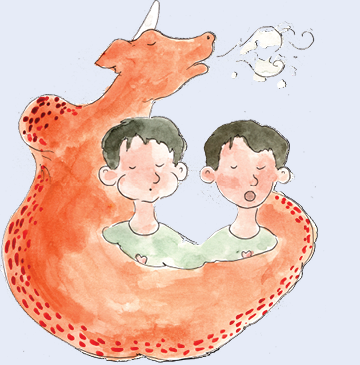
28ASK the children
Adults say, “Let’s feel a little scared so we see if breathing slowly helps. Let’s think of that scary picture of a floating coronavirus. Keep the picture in your mind and let’s breath slowly together.” Ready to start.
Adults say, ‘Listen to my voice and please do what I say. Slowly, as I count, take a deep breath 1.…2.…3.…4...5…. Hold your breath 1…2…3… Slowly, as I count, release your breath 1...2...3...4...5.
Let’s continue a second time. Slowly, as I count, take a deep breath 1...2...3...4...5. Hold your breath 1…2….3…. Slowly, as I count, release your breath I…2…3. …4. …5 .…
Let’s continue a third time. Slowly, as I count, take a deep breath 1…2...3…4...5... Hold your breath 1….2….3…. Slowly, as I count, release your breath 1….2...3...4...5….
ASK the children
Adults ask, “How does your body feel? What happened to the picture in your head of the coronavirus?”
Children say:
-
“I felt my heart slow down.”
-
“The coronavirus went bye bye.”
-
“ I felt calm.”
-
“I wanted sleep.”
Let’s CHAT
Let’s read what Sara does to feel calm and safe.
> Read these pages of My Hero is You

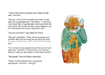
THE ARIO
INFORMATION FOR ADULTS
FEELING SAFE COMES FROM THE HEART
HOW CAN CHILDREN FEEL SAFE?
With the challenges of COVID-19, all children need support. Feelings of safety come from adults like moms, dads, grandparents, nannies, teachers and religious leaders. Where children live or the amount of money, toys, food or clothes that adults give are not what helps children feel safe.
Feelings of safety come from the heart. Adults offering sincere, compassionate support is what makes children feel safe. Feeling safe will allow the children to cope with the challenges that now surround them.
CHATTING WITH A CHILD WITH A PROBLEM
Teachers or other adults reading the story to a group, need to take care in speaking with children about their problems in front of other children. If a child mentions a specific personal problem during the group reading, it is best to ask the child to talk about it with you after the reading. Always best to sit with the child separately to talk about how this child can feel safe.
It is particularly important to listen when a child says, “I never feel safe.”It could take a long time to discuss this and understand why and what to do.
Whether you are the child’s parent or teacher, your response is similar. Since you are in the middle of reading a storybook, it is probably best to say to the child, “I am sorry to hear this. I would like to talk to you more about why you feel this way and what I can do to help. Let’s read the story now and right after we can talk about it.” Then, be sure, to make time to talk to this child about the fears and find ways for this child to feel safe.
GIVING HUGS?
30Depending on the relationship with the child, we have different way to physically show support. Parents or caregivers can give their children lots of hugs during and after the story to help them feel safe.
At school, with children wearing masks it is hard to see their emotions so we need to ask how they feel since we cannot rely on body language.
Teachers cannot hug children freely so they need to find the ways that are best in their culture to show their support. They can say to the children, “Let’s all give ourselves a hug.”
Teachers can hugs themselves and teach the children how to wrap their arms around themselves and give themselves a hug. Adults can remind children that giving themselves a hug when they feel scared or sad can be helpful at any time.
KEY MESSAGE 4 Keeping each other safe
CHAT 4
Let’s CHAT
Sara and Salem talked about how their grandparents make them feel “safe”. Living with the coronavirus has everyone a bit scared. Feeling safe makes us take a big deep sigh of relief and feel the comfort of being hugged. Even if no one touched us, feeling safe, lets us feel hugged. There are many ways to feel safe. For some kids, seeing their Mum smile at them during a hard time might let them feel safe. For other kids, staying at home and playing games with their brothers and sisters and not being teased helps them feel safe. Or, having their Dad join their kid games can make them feel safe.
ASK the children
Who makes you feel safe and what is it they say or do that gives you a feeling of safety?
Children might say:
-
“My Dad has no work. He stays at home all day now. He always looks miserable. Yesterday, we all put on masks and went outside. We just ran and tried to catch each other but did not touch. Playing with my Dad made me feel safe.”
-
“Eating dinner with my family makes me feel safe.”
-
“Sitting around a campfire with the family all together makes me feel safe.”
32
Let’s CHAT
The coronavirus makes us worry about another kind of safety. We worry about staying healthy and keep our bodies safe from catching COVID-19. Ario praised Sasha because she is staying home. Her Dad is sick with COVID-19 and he is contagious and could give COVID-19 to other people, so he is self-isolating and staying in his bedroom away from other people. Sasha is picking flowers and does not feel sick, but she lived in the same house with her Dad before he got sick.
Sometimes people can have the virus inside their bodies and feel fine but can still be contagious. Sasha is a hero because she is staying home and not taking any chances that she might have the virus and could make someone else sick. Sasha and her Dad are staying home and keeping other people safe from getting sick.
Being in self-isolation is lonely. There are many things Sasha could do to bring a smile to her Dad. It doesn’t matter whether Sasha is in a wheelchair or walking or from our same country or from another, we all can bring a smile to someone we love. This is especially important when the person we love has a problem. As example, Sasha could sing outside her Dad’s window.
ASK the children
What other ways can Sasha help her Dad smile while he is sick?
Children could say:
-
“Sasha could draw pictures and push them under the door of his room.”
-
“Sasha could put flowers on the tray her Dad gets for his food.”
-
“She could chat to her Dad outside his door.”
ASK the children
Let’s pretend we are Sasha’s father. What does Sasha’s father say to Sasha after she sings to him to let her know how he feels about her singing?
Children might say that Sasha’s father could say:
-
“Your singing made me feel better.”
-
“Your singing made me happy. Thanks. I love you.”
Let’s CHAT
33Feeling safe and closely connected to other people during COVID-19 is important. We can feel hugged if every day we remember to do something for each other that brings us a smile and makes us feel safe.
> Read this page of My Hero is You
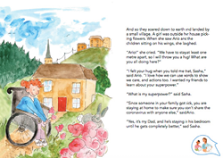
THE ARIO
INFORMATION FOR ADULTS
FAMILIES FIGHT COVID-19 TOGETHER
HOUR AFTER HOUR FAMILIES AT HOME
Before COVID-19, we wished for days when families could get extra time together. We welcomed days when Dads and Mums had no work or other things to do and children had no school and we could spend our days together. With COVID-19, too much of that wish came true. Now, stuck together day after day, we often wish for more to do. Yet, it seems we need to get used to being at home and surrounded by family more. Rather than wake up every morning dreading the day, it seems best to find new ways to improve being home.
AGREE ON A DAILY ROUTINE
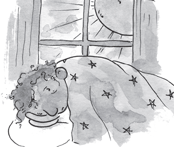
Families need routines for a set time to wake up - eat - go to sleep. It is good for everyone to have chores and share responsibilities for cooking and cleaning. Clear plans for how adults and children have space to do schoolwork or adult work at home are critical. What to do for fun also takes some family planning since the usual home activities may have become boring. It’s also not healthy for families to just sit around so exercise and fresh air needs to be part of a plan. And, like Sasha said, a bit of time alone and space for oneself, feels good.
35TALK IT OUT
Continaul family togetherness can lead to short tempers and disagreements. It is best for adults to agree with children on a few treasured ways to manage problems. As example, when a disagreement becomes tense and words and actions are making it worse it is best to separate. Always best to avoid saying or doing things in the heat of the angry moment you will later regret. Moving to a separate space or corner and using slow breathing to relax and cool down is helpful.

It can be useful to involve a third party to mediate and help to solve the issues. Then, you can return to be together after you agree you are cool enough to talk. Problems are best solved with talk!
Each person talks - one by one - and everyone listens. The goal is to solve the problems, so we need to stay positive and not blame or accuse the other or keep a grudge. Learning to compromise, where each person feels heard leads to solving problems together and giving all people some of what they want.
KEY MESSAGE 5 Solving problems
CHAT 5
Let’s CHAT
Being home together all the time, is both wonderful and difficult. First, let’s talk about what’s wonderful. (Parents shares first, saying what’s wonderful for them.)
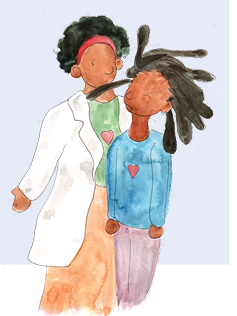
ASK the children
What’s wonderful for you about us being home together more than ever
Children might say:
-
“It’s wonderful doing my schoolwork with you. It’s only you and me so I can understand everything.”
-
“It’s wonderful to have Dad home and not at work all the time.”
-
“It’s wonderful to stay up late together every night.”
Salem and Sasha talked about family fights. Sometimes families fight when they get angry or frustrated with each other. Other times, they end up fighting when they get tired or bored or just need some time alone. Sasha gave some good advice. She said, the best way to solve problems in her family is to be “extra patient, and extra understanding, and even quicker to say I’m sorry.” I like Sasha’s advice for fixing family fights.
Family fighting always feels bad. We can think together about ways to fix family fights. I have one idea. When we feel angry or frustrated, we move away from each other. We find a separate room or corner to be in and we say, “Please, I need space” and everyone respects this. After about 10 minutes, the fighters check, “Are you ready to talk?”. They wait enough time until both are cool and ready to talk. The fighters then sit together and talk. Each person talks - one by one - and everyone listens. The goal is to solve the problems, so we need to stay positive and not blame or accuse each other. Each person will have to give the other some of what they want to solve the problem. If we stay calm and talk, maybe we can avoid the fight.
ASK the children
What other ideas do you have to fix our problems to avoid a fight?
Children might say:
-
“I like your idea. No one listens to me when I get angry. It makes me angrier.”
-
“My Teacher needs to listen to all sides of a fight not just one kid”
-
“My Mom needs to listen to me when I get angry.”
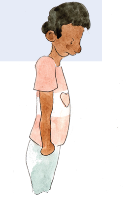
Let’s CHAT
Sasha’s advice is also good in school. She said, the best way to solve problems is to be “extra patient, and extra understanding, and even quicker to say I’m sorry.” Sometimes children fight in school. It is best if we take Sasha’s advice and avoid fights by being patient and understanding of each other. Let’s remember to listen when someone is angry to understand why. If it is your fault, say “I’m sorry.” If the other person is being unkind or teasing or bullying you, please tell me. Avoid the fight. Tell me, so I can help you to solve it.”
> Read this page of My Hero is You
39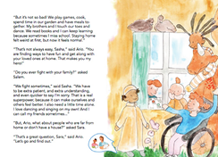
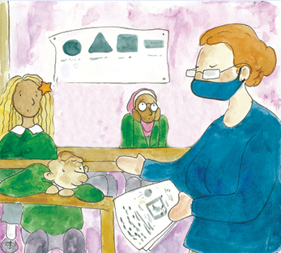
THE ARIO
INFORMATION FOR ADULTS
COVID-19 HAS NO BOUNDARIES

ST AYING SAFE HAS EXTRA CHALLENGES WHEN LIVING IN A “CAMP”
COVID-19 has no boundaries. It has infected people across the world. Ario has flown into a camp where many people are living closely together.
Adults can teach children about why Leila and other children live in camps. Dangerous situations where people are fighting, or there is not enough food or there was a flood or a fire or another disaster, can cause people to move into a camp. Some people have to leave their homes and go to a camp in another country to live safely. While others, can live safely in a camp in their own country. Most hope to return to their own homes someday but this is not always possible.
41In these camps, people have greater risks to get infected by Covid-19. It is difficult for children to follow the rules that can protect them if they live in crowded conditions with shortages of water and soap. In these situations, children become heroes by finding creative ways to stay safe from the virus. They can share information about practical ways to be safe that fit camp life to help protect others.
WE ARE ALL LEARNING THE SAME NEW RULES
Every adult can explain that there are many people in one camp and life is difficult there so it might not be easy to follow the rules that protect us from COVID-19. Leila lives far way and her life is different than Sara and Salem. Yet, Leila lets Ario, Salem and Sara know that she is doing her best to stay protected and follows the same rules that they follow to stay safe.

KEY MESSAGE 6 All people need to be protected
CHAT 6
Let’s CHAT
Ario took Sara and Salem far away. COVID-19 has no boundaries. It has travelled the world infecting people wherever it goes. From one end of the world to the other, crossing boundaries between countries and infecting people who live at home or in camps. It finds people who are rich or poor with all colors, ages and religions. If we look closely at the picture, we can see that Ario landed in a camp where many people are living closely together.
Leila asked a question that I’d rather not answer. She asked, “Is it true people can die from coronavirus?” I would prefer that your life does not include any heartache ever. Let’s read how Ario answers Leila’s question...
> Read these pages of My Hero is You
43
THE ARIO
INFORMATION FOR ADULTS
HOW TO DEAL WITH A BROKEN HEART?
ADULTS CAN PREPARE CHILDREN FOR LOSS
This is the most challenging CHAT. Adults have the responsibility to protect children, keep them safe and shield them the best they can from heartache. Sadly, this is not always possible. Life’s realities force adults to prepare children for how to live even when their hearts ache. Adults will leave children unprepared and alone if they skip this CHAT and avoid leading them safely through reality.
45
“IS IT TRUE PEOPLE CAN DIE FROM THE CORONAVIRUS?” ASKS LEILA
The difficult answer to Leila’s question, “Is it true people can die from coronavirus?” is “YES”. Children hear the voices of adults talking about the coronavirus. It is best for adults to be honest so children can trust adults to say the truth. As hard as it is, adults need to talk with children about living with death. For some people, faith and spirituality is important to help children to live with death. Adults can change this CHAT to include what is most important for your culture, traditions and religion.
46
KEY MESSAGE 7 Living with heartache
CHAT 7
Let’s CHAT
Leila asked a question that is difficult to answer. She asked, “Is it true some people die from the coronavirus.”
Ario answered Leila’s questions, “Yes, some people die from Covid-19.”
I prefer that your life never includes any heartache. I, along with your whole family and everyone who loves you, will do everything we can to protect you. Sadly, death is a part of life and affects all of us. I am unable to protect you from experiencing death. This is one of the realities in all our lives that causes us heartache. Our lives take many turns and twists and I am here to help you to manage them.
Yes, some people do die from COVID-19. Most often they are people who are older or people who are already sick with another disease. We must be extra careful to protect these people from getting infected. Sometimes, mums, dads or big brothers, sisters or even children die from COVID-19. It does not happen often, but it can happen. Even when we are careful, sometimes people still get sick and die. No one is to blame. It is no one’s fault. Having people we love die is something we will all experience at some time in our lives.
When someone dies, it really helps to talk about how we feel to someone who cares about us. We can hug each other. We can share the stories of our memories about the people who died. When people die, we miss them. By sharing memories when we were happy together, we can remember these people and keep them alive in our hearts.
Now, we will learn the way Ario suggested to Sara, Salem and Leila manage their feelings when they feel sad or scared or unsafe. Ario suggested they imagine inside their minds the look, feel, smell of a place that once made them happy. Ario thought that imaging a guest to go with you to this place could help you feel better. Your guest can be anyone you choose. So, think of who you want to take to that place with you. I suggest that we add a few deep breathes to all this imagining like we learned earlier to relax.
This imagining can help us when we are sad or anxious. Right now, we are enjoying a story and feel good. So, let me remind you of the creepy coronavirus with all its legs. That makes all of us a little scared.
48

Let’s CHAT
Now, we will try to manage our anxious feeling. Please, close your eyes. Let’s start with our breathing.
Slowly, as I count, take a deep breath 1...2...3...4...5. Hold your breath 1…2. …3.… Slowly, as I count, release your breath 1….2….3….4...5….
Remember a memory of a time when you felt safe. Imagine a picture in your head of how it looked, remember how you felt in that place even remember how it smelled. Now, imagine you bring your guest to that safe place with you. Let yourself feel safe. Now, imagine a happy time in that place with your guest. Imagine that you smile at your guest.
Slowly, as I count, take a deep breath 1….2….3….4...5…. Hold your breath 1….2….3…. Slowly, as I count, release your breath 1….2….3….4...5….}
Remember, I am here to help keep you safe. Whenever you feel unhappy, scared, confused, remember we can always CHAT.
Let’s open our eyes. Let’s come back from our imagining to each other and Leila, Sara, Salem, and Ario. In our storybook, Ario told Leila that he and many other people care about her and Sara and Salem. Let’s read what Leila’s answers.
> Read these pages of My Hero is You
49


THE ARIO
INFORMATION FOR ADULTS
WHEN ARE WE SAFE FROM A PERSON WHO WAS INFECTED?
WELCOME BACK AFTER COVID-19
Some people catch the coronavirus and get sick and most get better. Once they are no longer contagious, they are no risk to anyone. Logically, we should be happy to see them, and eat, socialize, play together like before they were sick. Why doesn’t it always happen like that? Why are some people who had the coronavirus rejected by their friends, family and communities?
FEAR SHOULD NOT BE STRONGER THAN SCIENCE
51Even though science teaches us that a person is now safe many people don’t want to take any chances, so they keep their distance. The people who were sick are sometimes rejected by others. People don’t want to be rejected so sometimes they pretend to be well and continue to work, go to school and socialize even when they are sick with COVID-19. Others need to work to feed their families so decide to work even though they know they are sick.
Self-isolating when you are sick is helping to stop the spread of the virus. Children can be heroes and learn to be responsible citizens by saying when they are sick so they can get the care they need. Children can learn to love and care for people at a distance when they are sick and be ready to accept their friends and family back into their lives just as soon as they are not contagious.
KEY MESSAGE 8 Being a responsible citizen of the world
Let’s CHAT Feeling safe and cared for Sara, Salem and Leila circle the world with Ario. Next stop, Ario introduces them to Kim who explains all about how he felt when he was sick with COVID-19.
ASK the children
My first thought is, “I’m glad I wasn’t there when Kim got sick. Why would I think that?”
Children might respond:
-
“The coronavirus can crawl from Kim to you and you don’t want to be sick and die.”
-
“I’m also glad I’m not there.”
-
“No one wants to be near anyone who was sick with COVID-19.”
We know the coronavirus is sneaky. We don’t see it as it passes from one person to another with ease. This virus does not infect all people the same. Some people get very sick and some less sick. Sometimes, we can’t tell that people have the virus. Not everyone who gets sick tells other people they are sick. They keep it a secret. Sometimes people are rejected after they were sick, so they keep it a secret because they don’t want to lose their friends. To keep everyone protected from the coronavirus it is important that everyone says, “I feel sick. I need your help,” immediately when they are sick.
ASK children
53What can we do to encourage everyone to speak out immediately when they are sick?
Children might respond:
-
“We can let them know we won’t reject them.”
-
“We offer them help, like buying them food, when they are sick.”
It is a big relief that the coronavirus doesn’t stay in a person forever. When they are no longer contagious, we have no worries since we will not get the coronavirus from them. They are the same person as before they got sick. It is safe to talk and play and be together. People will feel safe to say, “I am sick.” when they know they will get our support. They are many kind safe ways we can show our support. Adults can help by delivering them food and medicine and offering to run their errands. Adults and children can call them on the phone and give them our care. Children can copy Leila and sing at their windows. Most important, is to remember to care for those who are sick - especially if they are older or alone.
Back to our story, it is almost the end. Ario puts Sara back into her bed. Her journey around the world has ended. When Sara began her journey, she was scared and felt the coronavirus had stolen her life. She wanted to be a hero and protect herself and tell children all over the world how to be safe. When she went to sleep, she did not know how to do this. As Ario says goodbye, Sara tells him, “You are my hero.” I imagine Ario smiled when he said, “You are my hero too, Sara.”
ASK the children
What did Ario and Sara do that makes them both heroes?
Children might say:
-
“They told children all over the world how to be safe and avoid catching the coronavirus.”
Let’s CHAT
They were heroes because they went around the world and made sure that all children knew how to protect themselves from being infected by the coronavirus.
ASK the children
What did all the children learn to do to be protected?
Children might say:
-
“To wash our hands with soap.”
-
“Stay home.”
54 -
“If I go outside to play, then don’t touch my eyes or nose until I wash my hands.”
-
“When I am outside of the house wear a mask.”
Let’s CHAT
It is important to remember all these rules of protection to avoid getting infected with the coronavirus:
-
Wash your hands with soap many times a day
-
Don’t touch your eyes or nose until you wash your hands
-
Stay home or close to home if you go out to play.
-
Avoid big groups of people.
-
Wear a mask outside of the house
-
When outside of the house, keep a safe physical distance.
-
When you return to school, follow school rules to stay safe.
If you do get the virus or you have symptoms and might have the coronavirus, be a hero, be responsible. Immediately, tell those people close to you so you can keep them safe and not infect them.
When you know people are sick, offer your kind support. Lastly, when they are healthy again, be there just as you were before they got sick.
ASK the children
Do you have any questions about any anything we read or talked about?
Let’s CHAT
When we join together, we can keep each other safe so we are all protected. Let’s go back to Sara. She’s now in her bed...
> Read this page of My Hero is You
THE ARIO
INFORMATION FOR ADULTS
YOU ARE THE HERO
THANK YOU, ADULTS!
The storybook is finished, and you have shared a lot of important information with children to teach them how to keep themselves and others safe from the coronavirus.
You can feel proud that your children can now be HEROES and help to protect others.
Please continue to chat with your children about the messages all of you learned from the storybook.
55
KEY MESSAGE 9 My hero is YOU
CHAT 9
Let’s CHAT
I like this last picture in the storybook where Sara and her Mum are smiling and hugging. Sara and her Mum are smiling and hugging. At the beginning of the book, Sara was miserable. Now, Sara is smiling. She chats with her Mum and shares all about her adventures around the world. Sara’s Mum says, “My biggest hero is you.” Sara’s smile says she agrees. Sara feels strong like a hero because she now knows how to protect herself from the coronavirus and feels that she can help others to protect themselves.
ASK the children
Can you share some stories of times when you were a hero protecting or preventing yourself or others from getting the coronavirus?
Children might say:
-
“Grandma went outside to the market. I saw that she forgot her mask and ran home to bring it to her.”
57 -
“My Dad was sick with the coronavirus and my little brother kept sneaking into Dad’s room to play with him. I locked Dad’s door and took my brother to the window and we made silly faces through the window to Dad.”
Let’s CHAT
These are great stories and show you have learned a lot. Now that you know how to be a coronavirus hero you can protect your friends and families and show them how to be safe.
YOU are my hero !
> Read this page of My Hero is You
58
Links to My Hero is You further resources:
“My Hero is You, How kids can fight COVID-19!” storybook available in 125+ languages:
https://interagencystandingcommittee.org/iasc-reference-group-mental-health-and- psychosocial-support-emergency-settings/my-hero-you
Adaptations and country level initiatives of “My Hero is You, How kids can fight COVID-19!”:
https://interagencystandingcommittee.org/adaptations-my-hero-is-you